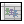

![[new.png]](new.png) Press this button and pick Census.
Press this button and pick Census.
First, do either of the following:
All the cells in the census are displayed in rows. Columns show how the cells differ from each other. No columns are displayed for a new census because there are initially no differences to show. A more detailed explanation is available.
Here are the things you can do next with this census:
Change input for an individual cell
Paste a census to or from a spreadsheet
Run or print an individual or composite illustration
Print illustrations for all cells
Put group values into a spreadsheet file
While this census is displayed, you can also create or load another illustration for an individual or group case.
Press this button and pick Census.
Or pull down the File menu, pick New, and then pick Census.
![[open.png]](open.png) Press this button.
Press this button.
Or pull down the File menu and pick Open.
Either way, go to Files of type: and choose Census. Pick the file you want and press Open.
You can also open files by dragging and dropping them on lmi.
A census is a collection of cells. Input fields can vary for each cell. Every input field you change for any cell is displayed in a column. The column shows that field’s value for every cell, even if it’s different for only one. A header says what the column means.
The census has case default values for every input field. These default values are used when you add a new cell to the census. You can examine and change the defaults.
Individuals can be grouped into classes. Classes have their own default values. You can manage class defaults separately from case defaults.
When you create a new census, there is only one class and one cell. All inputs are initially set to defaults, so the only column is Cell.
After you’ve created a new census, or loaded a saved one, here’s how to modify individual cells.
Highlight the cell you want to change, then
![[edit-cell.png]](edit-cell.png) press this button.
press this button.
Or pull down the Census menu and pick Edit cell.
Make your changes, then press OK to refresh the census display.
You can also edit data on the screen directly. Click the value you want to change, or use the arrow keys to move there. Then press F2 to edit the value.
To change case defaults, press this button.
Or pull down the Census menu and pick Edit case defaults.
Make your changes, then press OK to refresh the census display. If you want, you can apply the changes to every cell and every class.
To change class defaults, highlight a cell in the class you want to edit, then press this button.
Or pull down the Census menu and pick Edit class defaults.
Make your changes, then press OK to refresh the census display. If you want, you can apply the changes to every cell in the class.
Press this button.
Or pull down the Census menu and pick Add cell.
A new cell is added at the bottom, with all input set to case defaults.
Highlight the cells you want to delete, then press this button.
Or pull down the Census menu and pick Delete cell(s).
Deleted cells can’t be restored, so you’re asked to confirm the deletion.
If you have group data in a spreadsheet,
![[paste-census.png]](paste-census.png) press this button to
paste
them into a census. Or
press this button to
paste
them into a census. Or
![[copy-census.png]](copy-census.png) press this button to
copy
a census so that you can paste it into a spreadsheet.
press this button to
copy
a census so that you can paste it into a spreadsheet.
To run an individual cell, highlight it and press this button.
Or pull down the Census menu and pick Run selected cell.
The illustration is calculated and displayed. To print it,
![[print.png]](print.png) press this button, or pull down the File menu and pick
Print.
press this button, or pull down the File menu and pick
Print.
To run a composite of all cells in the census, press this button.
Or pull down the Census menu and pick Run case.
The composite is calculated and displayed. To print it,
press this button, or pull down the File menu and pick
Print.
Here’s how to calculate and print illustrations for all cells as well as a composite.
Press this button.
Or pull down the Census menu and pick Print case.
If you’d rather print to PDF files only, and not to the printer, press this button.
Or pull down the Census menu and pick Print case to PDF.
If you need to create your own custom supplemental illustrations, here’s how to put useful values into a spreadsheet file.
 Press this button.
Or pull down the Census menu and pick Print case to spreadsheet.
To create a roster with a one-line summary of each cell, press this button.
Or pull down the Census menu and pick Print group roster to spreadsheet.
To create a new-business premium quote with each cell on one line, press this button.
Or pull down the Census menu and pick Print group premium quote to PDF.
Some columns may not be wide enough to display the data you’ve entered. Here’s how to widen them.
Press this button.
Or pull down the Census menu and pick Varying column width.
The column widths are adjusted so that what you’ve typed fits in each cell.
Here’s how to make all columns the same width again.
Press this button.
Or pull down the Census menu and pick Fixed column width.
Any field that’s too long to fit is cut off so you can see more columns at a time.
![[save.png]](save.png) Press this button.
Press this button.
Or pull down the File menu and pick Save.
Either way, type a file name and press Save.
To save a file under a new name or in a new location, pull down the File menu and pick Save as.
Copyright © 1998, 1999, 2000, 2001, 2002, 2003, 2004, 2005, 2006, 2007, 2008, 2009, 2010, 2011, 2012, 2013, 2014, 2015, 2016, 2017, 2018, 2019, 2020, 2021 Gregory W. Chicares. This program, including its documentation, is free software. Read the terms under which you can redistribute and modify it.
Maintained by Gregory W. Chicares. The latest version of this file can be found at the lmi website.